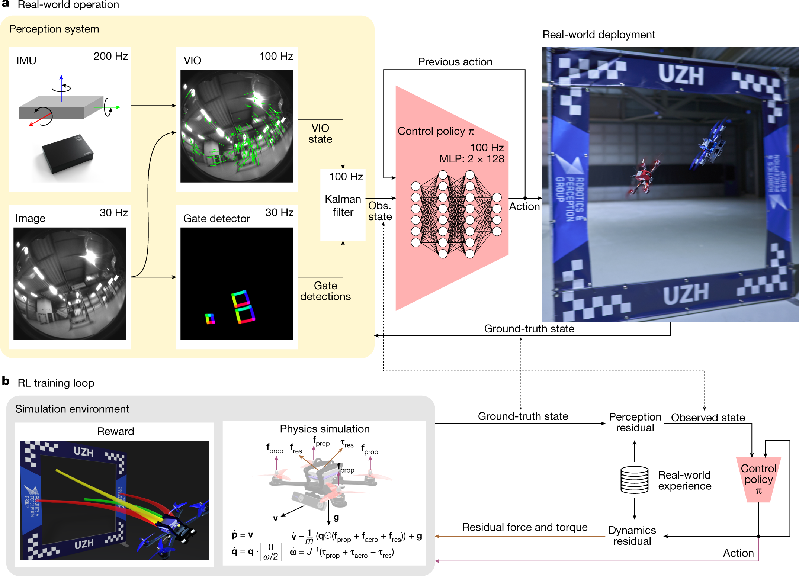
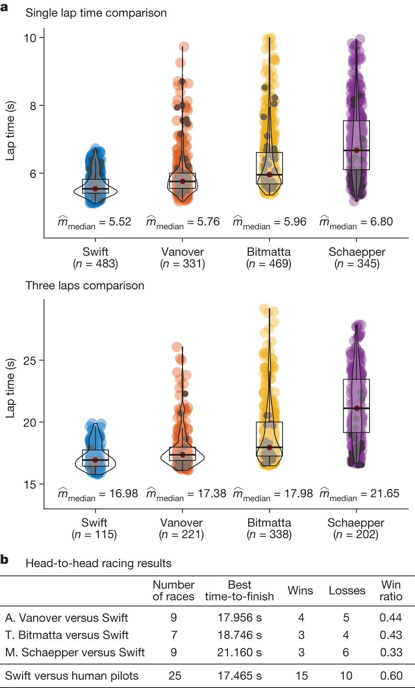
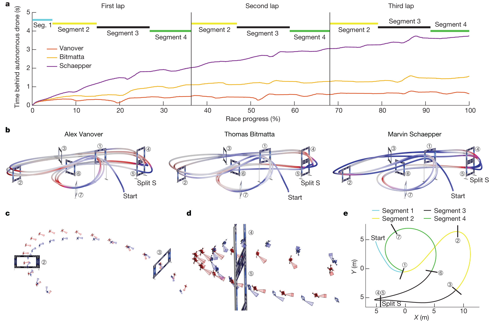

Champion-level drone racing using deep reinforcement learning
Nature · 2023 · 方法借鉴
适合训练与部署、感知到策略、轨迹和局部性能机制分析。
许可：CC BY 4.0。分区详见 筛选依据，未宣称已核验中科院一区。
Fig. 2 感知估计与策略部署
用途： 训练与部署。
画法借鉴： 从传感器到状态估计再到控制动作，旁边放仿真训练支路与真实数据校正。
解释边界： 感知误差和动力学误差应分别讨论。

Kaufmann, Elia; Bauersfeld, Leonard; Loquercio, Antonio; Müller, Matthias; Koltun, Vladlen; Scaramuzza, Davide. Champion-level drone racing using deep reinforcement learning. Nature (2023), Fig. 2. https://doi.org/10.1038/s41586-023-06419-4. CC BY 4.0. 未裁切、未重绘；按比例显示。
Fig. 3 基线成绩与成功稳定性
用途： 性能比较。
画法借鉴： 将结果分布和竞争结果并列，区分最快成绩与总体可靠表现。
解释边界： 单圈和连续多圈是不同统计单位。

Kaufmann, Elia; Bauersfeld, Leonard; Loquercio, Antonio; Müller, Matthias; Koltun, Vladlen; Scaramuzza, Davide. Champion-level drone racing using deep reinforcement learning. Nature (2023), Fig. 3. https://doi.org/10.1038/s41586-023-06419-4. CC BY 4.0. 未裁切、未重绘；按比例显示。
Fig. 4 策略为什么赢在这些位置
用途： 策略行为。
画法借鉴： 用沿路径的差值曲线定位优势区段，再用局部轨迹解释动作差异。
解释边界： 行为解释与干预验证的因果结论不同。

Kaufmann, Elia; Bauersfeld, Leonard; Loquercio, Antonio; Müller, Matthias; Koltun, Vladlen; Scaramuzza, Davide. Champion-level drone racing using deep reinforcement learning. Nature (2023), Fig. 4. https://doi.org/10.1038/s41586-023-06419-4. CC BY 4.0. 未裁切、未重绘；按比例显示。